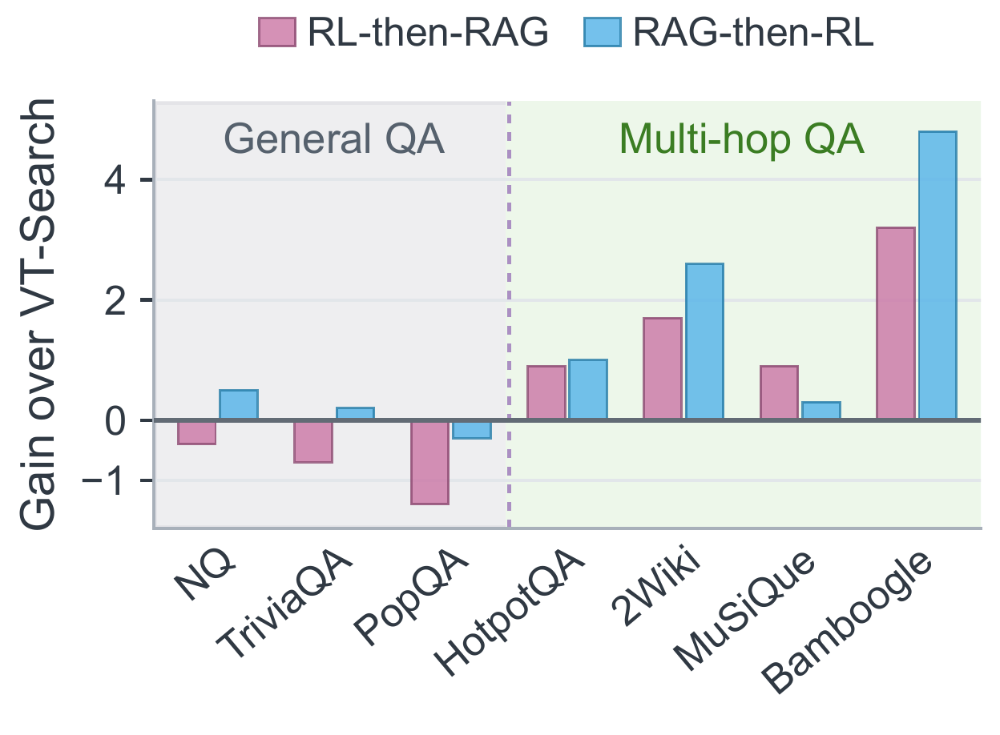
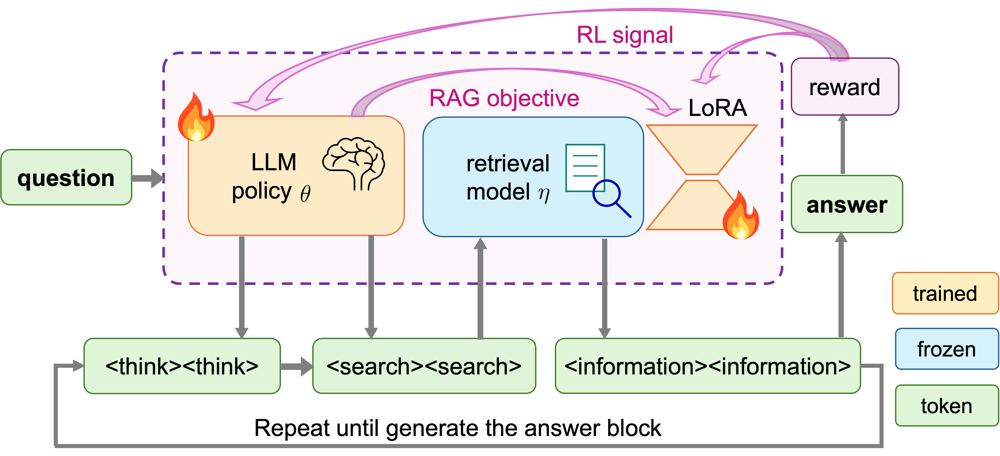
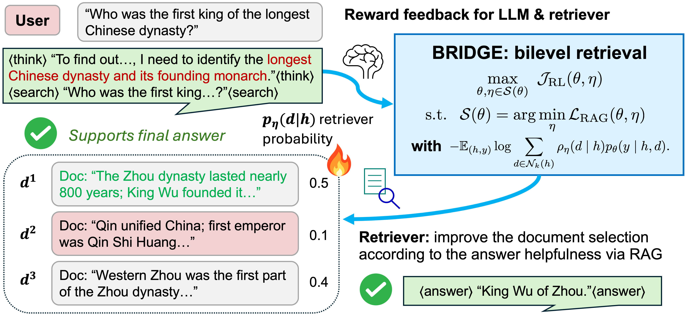
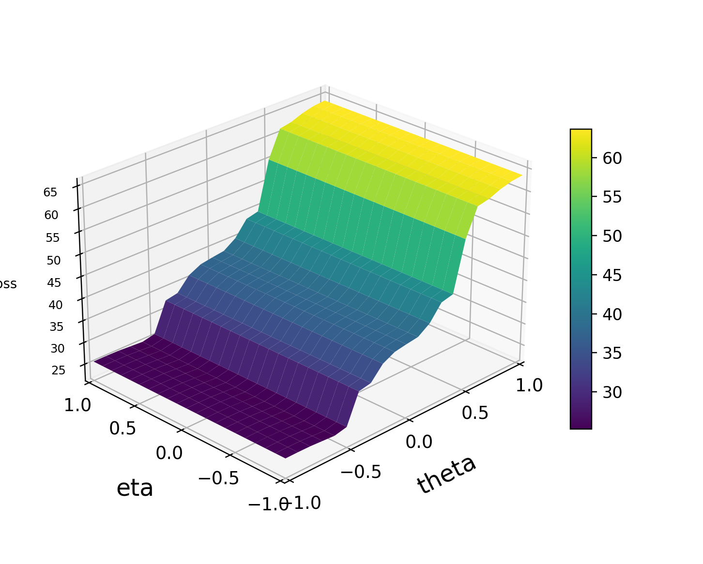
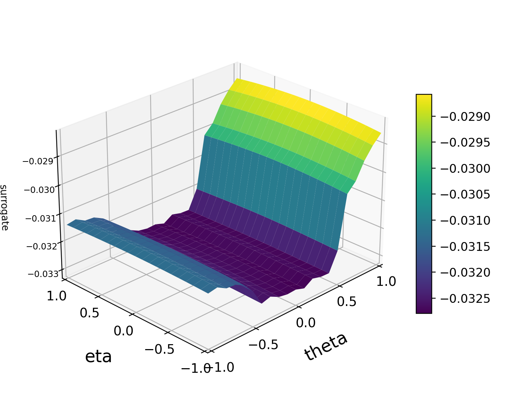
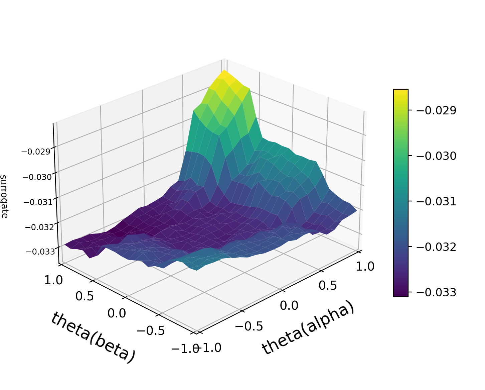
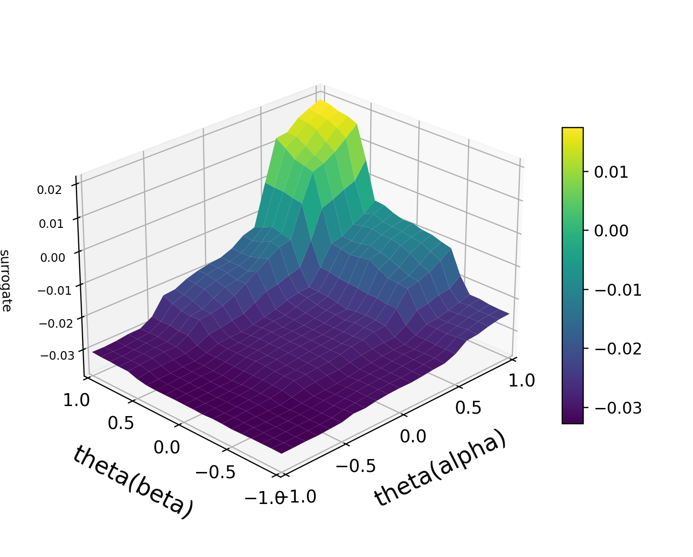

Rollout generation
Generate fresh rollouts
Generate tool-use trajectories with the current LLM policy and retriever, then compute rewards and advantages.
BRIDGE improves LLM agents on search-intensive tasks that require finding evidence and reasoning across multiple steps. It trains the agent and its retriever through bilevel optimization, using feedback from the agent’s answers to improve the evidence retrieved as the agent learns.
Across seven open-domain QA benchmarks, BRIDGE achieves the highest overall and multi-hop exact-match averages among evaluated baselines at both 3B and 7B, with gains of up to 7.1 and 9.6 points, respectively, and reaches 50.7% overall accuracy with Qwen3-14B. Across five medical QA benchmarks, its 7B model also leads the compared methods in average answer accuracy and reasoning quality.
Better reasoning begins with better evidence.
Agentic reinforcement learning (RL) trains LLMs to interleave reasoning with search by learning from sparse yet verifiable outcome rewards. However, most agentic RL methods optimize only model-generated reasoning, search, and answer tokens. In retrieval-augmented generation (RAG), retrieved information is instead treated as an environment observation and masked from the RL objective. Consequently, the retriever receives no corrective feedback when missing or misleading evidence derails a rollout.
This creates an information-credit gap: failures induced by missing or misleading evidence are attributed entirely to the LLM policy, while the retriever that supplied the information receives no corrective signal. The problem is particularly acute in multi-hop QA, where successful reasoning depends on relevant evidence distributed across multiple documents, and no policy update can compensate for a missing supporting document.
Consider a question about brown tumors: one retrieved passage links them to hyperparathyroidism, while another discusses unrelated finger lesions. If the agent answers incorrectly, the final reward signals failure but does not identify which passage was useful. RAG likelihood provides a document-specific learning signal, favoring passages under which the current LLM assigns higher probability to the reference answer—even when the sampled rollout fails.
Conversely, RL connects retrieval learning to the outcome of the complete trajectory. A passage can be useful because it enables the next search, even without stating the final answer. In the paper’s Norman Reedus example, the episode passage identifies the actor; a follow-up search is needed to find the company, Prada.
Motivated by the complementary roles of RL and RAG signals, we argue that alleviating the information-credit gap requires optimizing both the retriever and the LLM policy. However, the order of optimization matters. We find that updating the retriever first provides the LLM with higher-quality evidence, thereby increasing its propensity to search. In a controlled sequential comparison, RAG-then-RL attains a multi-hop average of 23.8, compared with 23.3 for RL-then-RAG and 21.7 for the top-performing baseline.

To preserve this ordering throughout training, we introduce BRIDGE, a memory-efficient first-order bilevel method for retrieval-credit-aware agentic reinforcement learning, with nested retriever and LLM-policy updates. At the lower level, for each LLM policy, a query-side retriever LoRA learns to select relevant documents by optimizing RAG answer likelihood and trajectory-level reward at retrieval turns. At the upper level, the LLM policy is then optimized on the same rollouts using the verifiable outcome reward.
Across seven open-domain QA benchmarks, BRIDGE achieves the highest overall and multi-hop accuracy among the compared methods with Qwen2.5-3B-Instruct and Qwen2.5-7B-base, with 9.6- and 3.4-point multi-hop gains over the strongest baselines. With Qwen3-14B, it reaches 50.7 overall and 45.5 multi-hop accuracy. On five medical QA benchmarks, BRIDGE achieves the highest macro-averaged answer accuracy and reasoning quality. At comparable wall-clock time, the 3B-base model retains an 8.0-point multi-hop advantage over VT-Search.
Update retrieval before policy
Rollout generation
Generate tool-use trajectories with the current LLM policy and retriever, then compute rewards and advantages.
Lower level
Update the query-side LoRA using retrieval-turn RL credit and RAG answer likelihood from those rollouts.
Upper level
After the retriever update, apply GRPO to the LLM-generated action tokens in the same rollouts.
BRIDGE formalizes retrieval-first training as a bilevel problem:
For each policy , the lower level selects a retriever that minimizes the RAG loss. The upper level then minimizes the RL objective subject to that lower-level solution. This formulation optimizes retrieval for the current policy before updating that policy, while allowing the retriever to adapt as the policy evolves.

Open full size ↗
Open full size ↗Solving this problem is difficult because the lower-level optimum depends implicitly on . Exact differentiation through this dependence introduces inverse-Hessian and Jacobian terms that are infeasible at LLM–retriever scale. Existing first-order penalty methods avoid these computationally heavy second-order operations but maintain both an unpenalized and a penalized retriever state:
The unpenalized state is optimized only for RAG, whereas the penalized state combines trajectory-level RL credit with the weighted RAG loss. Maintaining both states requires separate retriever parameters, optimizer states, and retrieval logs. The corresponding fully first-order hypergradient is
The last two terms compare two gradients of the RAG loss with respect to the policy: one evaluated at the penalized retriever and one at the unpenalized retriever. Computing this difference requires both states. To alleviate the memory cost, BRIDGE avoids this second retriever state by a careful examination of RAG and RL objective landscapes.
Landscape analysis
The RAG policy gradient cannot be omitted individually; instead, BRIDGE neglects the difference between the two RAG gradients evaluated at the nearby retriever states and .

Open full size ↗
Open full size ↗
Open full size ↗
Open full size ↗Qwen2.5-3B-base with an E5 retriever. and denote retriever and policy directions; and denote two policy-space projection directions.
Algorithmic implication. Panel (a) rules out the shortcut : the RAG policy gradient at the unpenalized retriever cannot be dropped by itself. Panel (b) instead suggests , so the last two RAG policy-gradient terms are evaluated at nearby retriever states. BRIDGE therefore neglects their difference as a pair—not the RAG gradient at alone—and uses as the policy-gradient estimator. Panels (c)–(d) further show that training moves the policy into a smoother RL region, consistent with improved generalization.
The following nine examples cover comparison, compositional retrieval, query repair, and medical QA. Choose a question, then compare BRIDGE with VT-Search through selected reasoning, search, and retrieval excerpts from the paper’s logged trajectories.
<think>To find out which battle lasted longer, I need to gather information about the duration of both the Battle of Hürtgen Forest and the Battle of Pusan Perimeter.
<search>Which battle lasted longer, Battle of Hürtgen Forest or Battle of Pusan Perimeter?<information>Doc 1(Title: "Battle of Pusan Perimeter") Battle of Pusan Perimeter was a large-scale battle between United Nations and North Korean forces lasting from August 4 to September 18, 1950 ... It was one of the first major engagements of the Korean War ... UN forces made a final stand at the Pusan Perimeter ...
Doc 2(Title: "Battle of Pusan Perimeter") North Korea refused to surrender ... the battle page again states August 4 to September 18, 1950 and describes the UN troops being rallied after repeated defeats by the advancing North Koreans ...
Doc 3(Title: "Battle of Hürtgen Forest") Battle of Hürtgen Forest was fought from 19 September to 16 December 1944 between American and German forces ... It was the longest battle on German ground during World War II and the longest single battle the U.S. Army has ever fought ...
<search>which battle lasted longer, Battle of Hürtgen Forest or Battle of Pusan Perimeter<information>Doc 1(Title: "Battle of Hürtgen Forest") Battle of Hürtgen Forest was a series of fierce battles fought from 19 September to 16 December 1944 between American and German forces on the Western Front during World War II in the Hürtgen Forest ... It was the longest battle on German ground during World War II, and is the longest single battle the U.S. Army has ever fought ...
Doc 2(Title: "Battle of Pusan Perimeter") The Battle of Pusan Perimeter was a large-scale battle between United Nations and North Korean forces lasting from August 4 to September 18, 1950 ... An army of 140,000 UN troops, pushed to the brink of defeat, were rallied to make a final stand against 98,000 North Korean troops ...
Doc 3(Title: "Battle of Pusan Perimeter") North Korea refused to surrender ... Online sources repeat that the battle lasted from August 4 to September 18, 1950 and describe UN forces being forced back to a defensive line around the southeastern tip of the Korean peninsula ...
BRIDGE retrieves the duration of both battles and identifies Hürtgen Forest as the longer engagement. VT-Search retrieves the relevant dates but answers with the shorter Pusan Perimeter.
<think>To find out who was the first king of the longest Chinese dynasty, I need to identify the longest Chinese dynasty and its founding monarch.
<search>Who was the first king of the longest Chinese dynasty?<information>Doc 1(Title: "King Nan of Zhou") King Nan of Zhou (? - 256 BC), born Ji Yan, was the 37th and last king of the Chinese Zhou dynasty ... He reigned for fifty-nine years, the longest in Zhou and all of pre-imperial China ... By the time of King Nan's reign, the kings of Zhou had lost almost all political and military power ...
Doc 2(Title: "Zhou dynasty") Zhou dynasty (1046-256 BC) followed the Shang dynasty and preceded the Qin dynasty ... The Zhou dynasty lasted longer than any other dynasty in Chinese history ... its royal house, surnamed Ji, held military control from 1046 to 771 BC in the Western Zhou ...
Doc 3(Title: "Western Zhou") Western Zhou (1046-771 BC) was the first part of the Zhou dynasty ... It was established by King Wu of Zhou, who overthrew the Shang dynasty ... the Zhou later moved east after King You was overthrown in 771 BC ...
<search>who was the first king of the longest Chinese dynasty<information>Doc 1(Title: "King Nan of Zhou") King Nan of Zhou (? - 256 BC), born Ji Yan, was the 37th and last king of the Chinese Zhou dynasty ... He was king for fifty-nine years, the longest in the Zhou Dynasty and all of pre-imperial China ... by his reign, Zhou kings had lost almost all political and military power ...
Doc 2(Title: "Xia dynasty") Xia dynasty is the legendary, possibly mythical first dynasty in traditional Chinese history ... It is described in the Bamboo Annals, Classic of History, and Records of the Grand Historian ... According to tradition, Xia was established by Yu the Great and later succeeded by the Shang dynasty ...
Doc 3(Title: "Tang of Shang") Tang or Cheng Tang, recorded on oracle bones as Da Yi, was the first king of the Shang dynasty ... He overthrew Jie, the last ruler of Xia ... Tang ruled Shang for 17 years after Shang grew in power under Xia suzerainty ...
BRIDGE retrieves both links in the reasoning chain: the Zhou dynasty lasted longest, and King Wu established Western Zhou. VT-Search retrieves the founder of Shang without resolving the first link.
<think>To determine who was born first between Andreas P. Nielsen and Lydia Flood Jackson, I need to gather information about their birth dates.
<search>Was Andreas P. Nielsen or Lydia Flood Jackson born first?<information>Doc 1(Title: "Lydia Flood Jackson") Lydia Flood Jackson (June 6, 1862 - July 8, 1963) was an American businesswoman, suffragist, and clubwoman ... Lydia Flood was born in Oakland, California ... her father Isaac Flood joined the California Colored Convention Movement to fight segregation in California schools ...
Doc 2(Title: "Fredrikke Nielsen") Fredrikke Louise Nielsen was born Fredrikke Louise Jensen July 5, 1837 in Haugesund ... She was a Norwegian actress and was married to actor Harald Nielsen ...
Doc 3(Title: "Andreas P. Nielsen") Andreas P. Nielsen (1943-2016) was a Danish politician ... He was born on February 12, 1943 in Copenhagen ... He represented a Danish constituency and served in national politics ...
<search>who was born first, Andreas P. Nielsen or Lydia Flood Jackson<information>Doc 1(Title: "Constance Jackson") Constance L. Jackson is a business start-up professional in health technology and filmmaking ... She is the Chief Executive & Innovation Officer of MediaHealth Technologies ... In 2008, Jackson published a book about abolitionist Lydia Maria Child, "Over the River... Life of Lydia Maria Child, Abolitionist for Freedom" ...
Doc 2(Title: "Lydia Flood Jackson") Lydia Flood Jackson (June 6, 1862 - July 8, 1963) was an American businesswoman, suffragist, and clubwoman ... Lydia Flood was born in Oakland, California ... her mother opened schools for black children in Sacramento and Oakland ...
Doc 3(Title: "Constance Jackson") Constance L. Jackson is a business start-up professional in health technology and filmmaking ... She has spoken at national and international conferences ... She is the writer, director, and producer of feature-length documentary films ...
BRIDGE retrieves birth years for both candidates and correctly selects Lydia Flood Jackson. VT-Search finds only her date and lacks the evidence needed for a valid comparison.
<think>To determine which genus, Erodium or Cymbidium, includes more species, I need the number of species in each genus.
<search>Does Erodium or Cymbidium include more species?<information>Doc 1(Title: Erodium) Erodium is a genus of flowering plants in Geraniaceae ... The genus includes about 60 species, native to North Africa, Indomalaya, the Middle East, and Australia ... flowers strongly resemble the better-known Geranium ...
Doc 2(Title: "Cymbidium eburneum") Cymbidium eburneum, the ivory-colored cymbidium, is a species of orchid ... It belongs to the genus Cymbidium and is found in the eastern Himalayas, Assam, and southern China ...
Doc 3(Title: Cymbidium) Cymbidium is a genus of orchids ... There are approximately 50 species in the genus ... the species are distributed in tropical and subtropical Asia and northern Australia ...
<search>does Erodium or Cymbidium include more species<information>Doc 1(Title: Erodium) Erodium is a genus of flowering plants in the botanical family Geraniaceae ... The genus includes about 60 species, native to North Africa, Indomalaya, the Middle East, and Australia ... They are perennials, annuals, or subshrubs with five-petalled flowers in white, pink, and purple ...
Doc 2(Title: Erodium) Erodium includes about 60 species ... American species are known as filarees or heron's bill, whereas Eurasian ones are called storksbills in English ... some species are used as food plants by Lepidoptera larvae ...
Doc 3(Title: "Cymbidium suave") Cymbidium suave, or the snake orchid, is an Australian orchid species ... It is part of the genus Cymbidium ... The genus consists of 52 species and this species has flattened, yellowish green pseudobulbs ...
BRIDGE compares genus-level counts for Erodium and Cymbidium and selects Erodium. VT-Search retrieves compatible counts but returns an answer that contradicts them.
<think>To find out the genre of "Hang-On," I need to gather information about the game "Hang-On."
<search>What genre is Hang-On?<information>Doc 1(Title: "Hang on the Box") Hang on the Box, also known as HOTB, is a punk band based in Beijing ... They were China's first all-female punk band ... the lineup includes Wang Yue on vocals, Yilina on bass, Li Yan Fan on guitar, and Shenjing on drums ...
Doc 2(Title: "Hang On (Weezer song)") "Hang On" is a song by the band Weezer ... It impacted radio on February 15, 2011 and is the seventh track and second single from the album "Hurley" ...
Doc 3(Title: "The Hang Ups") The Hang Ups are an indie pop rock band from Minneapolis, Minnesota, formed in 1990 ... Members include Brian Tighe, Jeff Kearns, Stephen Ittner, and John Crozier ...
<search>What genre is Hang On (video game)?<information>Doc 1(Title: "Super Hang-On") Super Hang-On is a motorcycle racing video game by Sega ... it is the sequel to Hang-On and uses arcade-style racing across multiple tracks ...
Doc 2(Title: Hang-On) Hang-On uses a behind-the-motorcycle perspective ... the player races a linear race track divided into stages within a limited time ... reaching checkpoints extends the time limit ...
Doc 3(Title: Hang-On) Hang-On was released as an arcade game with motorcycle-style controls ... The title is derived from the biker having to "hang on" to the bike while leaning ... the Master System version was also built into some consoles ...
<search>what genre is Hang-On<information>Doc 1(Title: "Hang on the Box") Hang on the Box, also known as HOTB, is a punk band based in Beijing ... They were China's first all-female punk band ... The band usually sings about sex and relationship issues in a forward political manner ...
Doc 2(Title: "The Hang Ups") The Hang Ups are an indie pop rock band from Minneapolis, Minnesota, formed in 1990 and fronted by vocalist and guitarist Brian Tighe ... They released their debut EP "Comin' Through" in 1993 and later released four studio albums ...
Doc 3(Title: "Hang on the Box") Hang on the Box were featured on the local edition cover of Newsweek six months later ... Their music could be described as cheerful and hilarious, deadly serious, and personally political ... The page again identifies HOTB as a punk band ...
BRIDGE repairs the query and retrieves the video game, but its answer, “racing game,” does not match the appendix reference, “arcade game.” This illustrates query repair, not a confirmed exact-match success. VT-Search follows music results and answers “punk.”
<think>To find out who the father of Chimera is, I need to gather information about Chimera and her parentage.
<search>Who is the father of Chimera?<information>Doc 1(Title: "Chimera (short story)") Chimera is a comical short story by Lee Yeongdo based on Dragon Raja ... The king of Caria, Amisodarus, raised the Chimera to terrorize the surrounding region ...
Doc 2(Title: "King Chimera") King Chimera is a fictional superhero in the DC Comics Universe ... The character first appeared in Justice Society of America and claims to be the son of "King" Standish ...
Doc 3(Title: "King Chimera") King Chimera is a fictional superhero in the DC Comics Universe ... He is a member of the Justice Society of America and first appeared in "Justice Society of America" (vol. 3) #24 ...
<search>Who is the father of Chimera in Greek mythology?<information>Doc 1(Title: "Chimera (mythology)") Chimera is a monstrous hybrid creature in Greek mythology ... commonly described as fire-breathing and as one of the offspring of Typhon and Echidna ...
Doc 2(Title: "Chimera (mythology)") The mythology page discusses variant genealogies ... most traditions attribute the Chimera and related monsters to Typhon and Echidna ...
Doc 3(Title: "Chimera of Arezzo") The Chimera of Arezzo depicts the mythological Chimera in bronze ... the object is identified with the creature described as offspring of Typhon and Echidna ...
<search>who is the father of Chimera<information>Doc 1(Title: "King Chimera") King Chimera is a fictional superhero in the DC Comics Universe, a member of the Justice Society of America ... He first appeared in "Justice Society of America" (vol. 3) #24 in April 2009 ...
Doc 2(Title: "King Chimera") King Chimera keeps a mysterious identity and very little is known about his past ... the page says he claims to be the son of "King" Standish ...
Doc 3(Title: "Chimera (short story)") Chimera is a comical short story by Korean author Lee Yeongdo based on Dragon Raja ... The king of Caria, Amisodarus, raised the Chimera to terrorize the surrounding region ...
BRIDGE recognizes the ambiguous entity and issues a second search for Greek mythology, which retrieves Typhon and Echidna. VT-Search stops after results for unrelated entities.
<think>To answer this question, I need to analyze the symptoms and the X-ray findings provided. The patient has finger pain, small palpable tumors on the fingers, and an X-ray showing thin bones with brown tumors and osteolysis of the distal phalanges. …
<search>symptoms of finger pain, small palpable tumors on the fingers, thin bones with brown tumors and osteolysis of the distal phalanges<information>Doc 1(Title: "Osteochondroma") Signs and symptoms
Doc 2(Title: "Brown tumour in phalanx of the ring finger due to chronic kidney failure. A case report.") Brown tumours are highly vascular lytic bone lesions found in primary and secondary hyperparathyroidism. The brown term is given due to the red-brown colour of the tissue, which is due to the accumulation of hemosiderin. …
Doc 3(Title: "Benign tumor") Signs and symptoms
Untagged model outputFrom the search results, I found that the symptoms described are consistent with hyperparathyroidism, which is a condition where the parathyroid glands produce too much parathyroid hormone (PTH). This hormone regulates the levels of calcium and phosphorus in the body, and when it is overproduced, it can lead to bone resorption and the formation of brown tumors.
<think>Based on the symptoms and the X-ray findings, the most likely cause for this patient's condition is hyperparathyroidism. The presence of brown tumors and osteolysis of the distal phalanges is characteristic of this condition.
<think>To answer this question, I need to analyze the given information and use it to determine the most likely cause of the patient's condition. The patient is a 50-year-old woman with finger pain in her left hand, confusion, and small palpable tumors on her fingers. …
<search>What is the most likely cause for a 50-year-old woman with finger pain, confusion, palpable tumors, and osteolysis of the distal phalanges?<information>Doc 1(Title: "An unusual presentation of a ring injury.") A case of chronic erosion of the soft tissues and bone of the proximal phalanx of the ring finger in a 62-year-old woman is presented. The patient's rings had eroded the skin, nerves, and tendons of the finger as well as the palmar aspect of the proximal phalanx; however, circulation was adequate. …
Doc 2(Title: "Metastatic phalangeal osteolysis as an initial presentation of carcinoma colon.") Metastatic malignancies of the hand are rare and usually develop from lung, breast, or kidney tumors. Metastases from tumors and sarcomas of the gastrointestinal system are even more uncommon. …
Doc 3(Title: "Fibro-osseous pseudotumour of the digit-a diagnostic challenge.") A 60-year-old right-hand dominant woman presented to the emergency department with a 3-week history of pain and swelling in her right thumb. The X-ray showed evidence of erosion at the tip of the distal phalanx. …
Untagged model outputBased on the information provided and the symptoms described, the most likely cause for this patient's condition is multiple myeloma.
BRIDGE retrieves evidence linking brown tumors to hyperparathyroidism. VT-Search retrieves other causes of finger lesions and retains multiple myeloma.
<think>To answer this question, I need to identify the cause of the patient's symptoms and then determine the most appropriate therapy. The patient has a history of substance-induced psychosis and is currently experiencing episodic neck stiffness and pain, which is accompanied by neck rotation to the right. …
<search>treatment for neck dystonia caused by haloperidol<information>Doc 1(Title: "A patient with haloperidol induced laryngeal dystonia.") We discus the case of a forty-nine year old patient with haloperidol induced laryngeal dystonia (LD). Laryngeal dystonia is a life threatening, very rare medical condition which is difficult to diagnose. …
Doc 2(Title: "Haloperidol-Induced Dystonia due to Sedation for Upper Gastrointestinal Endoscopy: A Pediatric Case Report.") Dystonia is a movement disorder characterized by sustained muscle tone. Antipsychotic agents sometimes cause acute dystonia that can rapidly worsen within a few hours or days. …
Doc 3(Title: "Treatment of dystonia and tics.") Treatment of dystonia and tics continues to evolve. In dystonia, while oral agents such as benzodiazepines, baclofen and anticholinergics remain in use, botulinum toxin (BoNT) continues to be regarded as the treatment of choice for focal and segmental dystonia, but new preparations are being studied. …
Untagged model outputBased on the search results and the patient's history of haloperidol use, the most appropriate therapy for this patient's symptoms is Benztropine, which is an anticholinergic medication used to treat dystonia caused by antipsychotic medications like haloperidol.
<think>To answer this question, I need to determine the most appropriate therapy for the patient's symptoms of episodic neck stiffness and pain, which are accompanied by neck rotation and limited range of motion. First, let's analyze the patient's condition: - The patient is a 31-year-old man with a history of substance-induced psychosis. …
<search>What is the most appropriate therapy for neck muscle spasms or stiffness in patients with substance-induced psychosis or those taking haloperidol?<information>Doc 1(Title: "[On a muscular dystony case from manganism. Therapeutic clinic considerations (author's transl)].") It is described a muscular dystony case of manganism, treated with good results in two following phases with haloperidol and diazepam and then with L-Dopa + benserazide. On the basis of clinical and laboratory results, it makes way the hypothese that the haloperidol had developed his therapeutic action with chelation mechanism.
Doc 2(Title: "Is haloperidol or a benzodiazepine the safest treatment for acute psychosis in the critically ill patient?") A best evidence topic in cardiac surgery was written according to a structured protocol. The question addressed was whether haloperidol or a benzodiazepine is the safest treatment for acute psychosis in the critically ill patient. …
Doc 3(Title: "InternalMed_Harrison") Optimal treatment of stiff-person syndrome requires therapy of the underlying tumor, glucocorticoids, and symptomatic use of drugs that enhance GABA-ergic transmission (diazepam, baclofen, sodium valproate, tiagabine, vigabatrin). IVIg and plasma exchange are transiently effective in some patients.
Untagged model outputBased on the information, it seems that muscle relaxants like dantrolene and baclofen are effective in treating muscle spasms and stiffness. Since the patient is already taking haloperidol, which is an antipsychotic medication, it is important to find a therapy that addresses the neck muscle stiffness without causing additional side effects. …
BRIDGE targets haloperidol-induced dystonia in its search and selects benztropine. VT-Search uses a broader query about muscle spasms and selects baclofen.
<think>To answer this question, I need to analyze each option and determine which one provides the most reasonable explanation for why a properly designed rest on the lingual surface of a canine is preferred over a rest on the incisal surface. I'll consider the biomechanical, anatomical, and aesthetic factors involved in dental restorations.
<search>Why is a properly designed rest on the lingual surface of a canine preferred to a rest on the incisal surface?<information>Doc 1(Title: "The marginal-ridge rest seat.") Natural canine crowns are preferred as abutments for removable partial dentures because of their root morphology and bony support. However, preparing the rest seat on the lingual surface of a mandibular canine risks perforating the enamel. …
Doc 2(Title: "[Evaluation of stresses in different cingulum rest seats].") Both lingual and incisal rest seats are used on anterior teeth. Lingual rest seats are preferred since they are more acceptable esthetically and located closer to the centre of rotation of the tooth. …
Doc 3(Title: "Evaluation of prefabricated lingual rest seats for removable partial dentures.") An investigation into the feasibility of using prefabricated lingual rest seats bonded to mandibular canines and incisors with an orthodontic enamel bonding system was undertaken. 1. …
Untagged model outputFrom the search results, it is clear that the lingual surface of a canine is preferred for a rest because it is more esthetically acceptable and located closer to the center of rotation of the tooth. This reduces the leverage exerted against the tooth by the rest.
<think>Based on the information gathered, the correct answer is: A: Less Leverage is exerted against the tooth by Lingual rest
<think>To answer this question, I need to analyze the given options and determine which one provides the most reasonable explanation for why a properly designed rest on the lingual surface of a canine is preferred over a rest on the incisal surface. Option A: Less Leverage is exerted against the tooth by Lingual rest Option B: Enamel is thicker on lingual surface Option C: Visibility and access is better on lingual …
<search>A properly designed rest on lingual surface of a canine is preferred to a rest on incisal surface<information>Doc 1(Title: "The marginal-ridge rest seat.") Natural canine crowns are preferred as abutments for removable partial dentures because of their root morphology and bony support. However, preparing the rest seat on the lingual surface of a mandibular canine risks perforating the enamel. …
Doc 2(Title: "Evaluation of prefabricated lingual rest seats for removable partial dentures.") An investigation into the feasibility of using prefabricated lingual rest seats bonded to mandibular canines and incisors with an orthodontic enamel bonding system was undertaken. 1. …
Doc 3(Title: "[Evaluation of stresses in different cingulum rest seats].") Both lingual and incisal rest seats are used on anterior teeth. Lingual rest seats are preferred since they are more acceptable esthetically and located closer to the centre of rotation of the tooth. …
Untagged model outputBased on the information, it seems that the correct answer is related to the distribution of stress and the location of the rest seat. The lingual surface is preferred because it is closer to the center of rotation of the tooth and provides a more uniform stress distribution. …
Both methods retrieve the same three passages in different orders. BRIDGE connects the rotation-center evidence to reduced leverage and selects A; VT-Search acknowledges that evidence but chooses the cingulum distractor, D.
We evaluate BRIDGE on seven open-domain and five medical QA benchmarks, across six LLM backbones, including Base and Instruct variants at both 3B and 7B.
BRIDGE reaches 41.5% overall and 34.5% multi-hop exact match with Qwen2.5-3B-Instruct, and 48.2% and 43.2% with Qwen2.5-7B-base. These exceed the second-best overall averages by 7.1 and 2.3 points, and the second-best multi-hop averages by 9.6 and 3.4 points, respectively.
We first isolate what drives the accuracy gains, then examine estimator fidelity, retriever-update cost, and training efficiency.
Build on BRIDGE.
arXiv submission forthcoming. The citation will be updated once the arXiv identifier is available.
@misc{xiao2026bridge,
title = {{BRIDGE}: Bilevel Retrieval-Credit-Aware Agentic Reinforcement Learning},
author = {Xiao, Quan and Liu, Mingda and Liu, Gaowen and
Fujisawa, Katsuki and Chen, Tianyi},
year = {2026},
note = {Preprint; arXiv submission forthcoming}
}